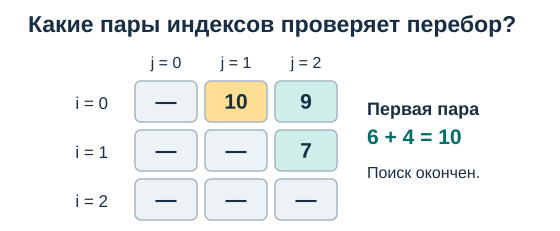

Сложность и перебор
Как посчитать объём работы
Пусть в списке n чисел. Чтобы найти максимум, нужно посмотреть на каждое число. Если увеличить список вдвое, сравнений тоже станет примерно вдвое больше. Такое время называют линейным и записывают O(n). Для хранения текущего максимума достаточно одной переменной при любой длине списка, поэтому дополнительная память составляет O(1).
Обозначение O даёт верхнюю оценку роста затрат при увеличении входных данных. В таблице указаны обычные оценки для операций с машинными числами.
| Время | Пример | Как растёт работа |
|---|---|---|
O(1) |
Обращение к элементу массива по индексу | Число действий постоянно |
O(log n) |
Двоичный поиск | При удвоении размера добавляется примерно один шаг |
O(n) |
Поиск максимума | При удвоении размера работы примерно вдвое больше |
O(n log n) |
Сортировка сравнением, например сортировка слиянием | При удвоении размера работы чуть больше чем вдвое |
O(n²) |
Перебор всех пар | При удвоении размера работы примерно вчетверо больше |
O(2ⁿ) |
Перебор подмножеств | Уже один новый элемент удваивает число вариантов |
Как перебрать пары без повторов
Найдём два разных индекса, по которым стоят числа с суммой 10. В массиве [6, 4, 3] подходят индексы 0 и 1. Для массива [5] ответ отрицательный. Чтобы получить 10, пришлось бы взять одну и ту же пятёрку дважды.
- Выбираем индекс
iпервого числа. - Второй индекс
jперебираем отi + 1до последнего элемента. Так каждая пара встретится ровно один раз. - Как только сумма совпала, возвращаем положительный ответ. Отрицательный ответ можно дать лишь после окончания обоих циклов.

Сколько пар проверит цикл?
Измени размер массива и искомую сумму. Если совпадение встретится рано, часть пар так и останется непроверенной.
В коде индексы i и j из схемы называются first_index и second_index. В каждой отмеченной клетке алгоритм читает два числа, складывает их и сравнивает сумму с целью. Процессор может оставить первое число в регистре на весь внутренний цикл. Число возможных пар можно посчитать заранее. Сколько пар программа действительно проверит, зависит от того, когда она найдёт совпадение.
Для первого индекса есть n − 1 возможных партнёров, для второго — n − 2, для последнего — ни одного. При n элементах всего n(n − 1)/2 пар. В худшем случае проверим их все. Поэтому время в худшем случае составляет O(n²), дополнительная память — O(1). При небольших входных данных такой перебор удобно использовать для проверки более быстрого решения.
В примерах справочника нумерация начинается с нуля. Запись [l, r) включает индекс l и исключает r. Для сумм в C++ используем long long. При решении задачи проверь по ограничениям, помещаются ли в этот тип промежуточные результаты.
C++
#include <cstddef>
#include <vector>
using std::size_t;
using std::vector;
using Int = long long;
using Numbers = vector<Int>;
bool pair_brute(const Numbers& values, Int target) {
for (size_t first_index = 0; first_index < values.size(); ++first_index) {
for (size_t second_index = first_index + 1; second_index < values.size(); ++second_index) {
if (values[first_index] + values[second_index] == target) return true;
}
}
return false;
}
Тот же алгоритм на Python
def pair_brute(values, target):
for first_index in range(len(values)):
for second_index in range(first_index + 1, len(values)):
if values[first_index] + values[second_index] == target:
return True
return False